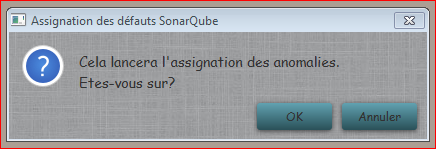

Assigner Anos SonarQube
Cette fonction permet d'assigner à leur créateur dans SonarQube les anomalies qui n'ont pas encore pu l'être, une fois que ceux-ci ce sont connectés au moins une fois au serveur.

Une fois assignées les anomalies sont supprimées de la base de données pour ne gagrder que celles non assignées.